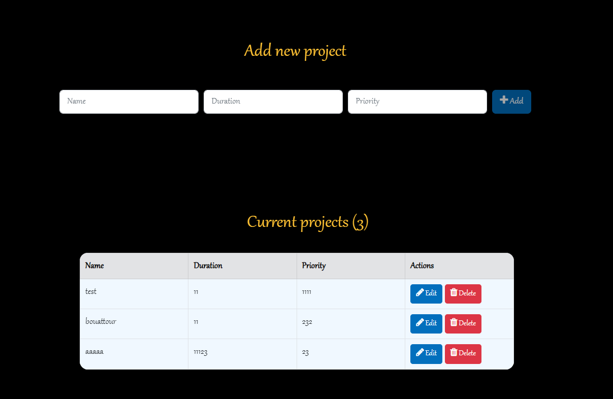

PROjects appllication is a simple and effective process for managing tasks in a project. These tasks can be independent or, on the contrary, need to be completed in a certain order. For example, an IT project manager might note the bugs to be fixed and the start and end dates of the problem.
